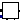
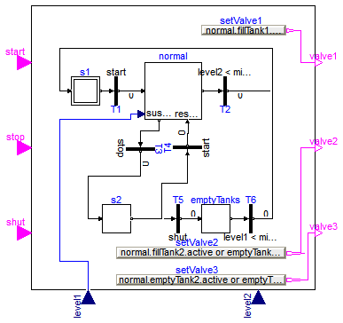
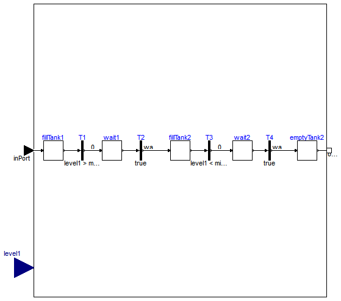

| Name | Description |
|---|---|
| Controller for tank system | |
|  NormalOperation | Normal operation of tank system (button start pressed) |
| Button that sets its output to true when pressed and is reset when an element of 'reset' becomes true |

| Type | Name | Default | Description |
|---|---|---|---|
| Height | maxLevel | Fill level of tank 1 [m] | |
| Height | minLevel | Lowest level of tank 1 and 2 [m] | |
| Time | waitTime | Wait time, between operations [s] |
| Type | Name | Description |
|---|---|---|
| input BooleanInput | start | |
| input BooleanInput | stop | |
| input BooleanInput | shut | |
| input RealInput | level1 | |
| input RealInput | level2 | |
| output BooleanOutput | valve1 | |
| output BooleanOutput | valve2 | |
| output BooleanOutput | valve3 |
model TankController "Controller for tank system"
extends Modelica.StateGraph.Interfaces.PartialStateGraphIcon;
parameter SI.Height maxLevel "Fill level of tank 1";
parameter SI.Height minLevel "Lowest level of tank 1 and 2";
parameter SI.Time waitTime "Wait time, between operations";
Modelica.StateGraph.InitialStep s1(nIn=2);
Modelica.Fluid.Examples.ControlledTankSystem.Utilities.NormalOperation
normal(
maxLevel=maxLevel,
minLevel=minLevel,
waitTime=waitTime);
Modelica.StateGraph.Transition T1(condition=start);
Modelica.StateGraph.Transition T2(condition=level2 < minLevel);
Modelica.StateGraph.Transition T3(condition=stop);
Modelica.StateGraph.Step s2(nOut=2);
Modelica.StateGraph.Transition T4(condition=start);
Modelica.StateGraph.Transition T5(condition=shut);
Modelica.StateGraph.Step emptyTanks;
Modelica.StateGraph.Transition T6(condition=level1 < minLevel and level2
< minLevel);
Modelica.Blocks.Interfaces.BooleanInput start;
Modelica.Blocks.Interfaces.BooleanInput stop;
Modelica.Blocks.Interfaces.BooleanInput shut;
Modelica.Blocks.Interfaces.RealInput level1;
Modelica.Blocks.Interfaces.RealInput level2;
Modelica.Blocks.Interfaces.BooleanOutput valve1;
Modelica.Blocks.Interfaces.BooleanOutput valve2;
Modelica.Blocks.Interfaces.BooleanOutput valve3;
Modelica.Blocks.Sources.BooleanExpression setValve1(y=normal.fillTank1.
active);
Modelica.Blocks.Sources.BooleanExpression setValve2(y=normal.fillTank2.
active or emptyTanks.active and level1 > minLevel);
Modelica.Blocks.Sources.BooleanExpression setValve3(y=normal.emptyTank2.
active or emptyTanks.active and level2 > minLevel);
equation
connect(s1.outPort[1], T1.inPort);
connect(T1.outPort, normal.inPort);
connect(normal.outPort, T2.inPort);
connect(T5.outPort, emptyTanks.inPort[1]);
connect(emptyTanks.outPort[1], T6.inPort);
connect(setValve1.y, valve1);
connect(setValve2.y, valve2);
connect(setValve3.y, valve3);
connect(normal.suspend[1], T3.inPort);
connect(T3.outPort, s2.inPort[1]);
connect(level1, normal.level1);
connect(s2.outPort[1], T5.inPort);
connect(s2.outPort[2], T4.inPort);
connect(T2.outPort, s1.inPort[1]);
connect(T6.outPort, s1.inPort[2]);
connect(T4.outPort, normal.resume[1]);
end TankController;

| Type | Name | Default | Description |
|---|---|---|---|
| Height | maxLevel | Fill level of tank 1 [m] | |
| Height | minLevel | Lowest level of tank 1 and 2 [m] | |
| Time | waitTime | Wait time between operations [s] | |
| Exception connections | |||
| Integer | nSuspend | 1 | Number of suspend ports |
| Integer | nResume | 1 | Number of resume ports |
| Type | Name | Description |
|---|---|---|
| Step_in | inPort | |
| Step_out | outPort | |
| CompositeStep_suspend | suspend[nSuspend] | |
| CompositeStep_resume | resume[nResume] | |
| input RealInput | level1 |
model NormalOperation
"Normal operation of tank system (button start pressed)"
extends Modelica.StateGraph.PartialCompositeStep;
parameter SI.Height maxLevel "Fill level of tank 1";
parameter SI.Height minLevel "Lowest level of tank 1 and 2";
parameter SI.Time waitTime "Wait time between operations";
Modelica.Blocks.Interfaces.RealInput level1;
Modelica.StateGraph.Step fillTank1;
Modelica.StateGraph.Transition T1(condition=level1 > maxLevel);
Modelica.StateGraph.Step fillTank2;
Modelica.StateGraph.Transition T3(condition=level1 < minLevel);
Modelica.StateGraph.Step emptyTank2;
Modelica.StateGraph.Step wait1;
Modelica.StateGraph.Transition T2(enableTimer=true, waitTime=waitTime);
Modelica.StateGraph.Step wait2;
Modelica.StateGraph.Transition T4(enableTimer=true, waitTime=waitTime);
equation
connect(fillTank1.inPort[1], inPort);
connect(fillTank1.outPort[1], T1.inPort);
connect(fillTank2.outPort[1], T3.inPort);
connect(emptyTank2.outPort[1], outPort);
connect(wait1.outPort[1], T2.inPort);
connect(T2.outPort, fillTank2.inPort[1]);
connect(T1.outPort, wait1.inPort[1]);
connect(wait2.outPort[1], T4.inPort);
connect(T3.outPort, wait2.inPort[1]);
connect(T4.outPort,emptyTank2.inPort[1]);
end NormalOperation;

| Type | Name | Default | Description |
|---|---|---|---|
| Time | buttonTimeTable[:] | Time instants where button is pressend [s] | |
| Time varying expressions | |||
| Boolean | reset[:] | {false} | Reset button to false, if an element of reset becomes true |
| Type | Name | Description |
|---|---|---|
| output BooleanOutput | on |
block RadioButton
"Button that sets its output to true when pressed and is reset when an element of 'reset' becomes true"
parameter Modelica.SIunits.Time buttonTimeTable[:]
"Time instants where button is pressend";
input Boolean reset[:]={false}
"Reset button to false, if an element of reset becomes true";
Modelica.Blocks.Interfaces.BooleanOutput on;
protected
Modelica.Blocks.Sources.BooleanTable table(table=buttonTimeTable);
algorithm
when pre(reset) then
on := false;
end when;
when change(table.y) then
on := true;
end when;
end RadioButton;